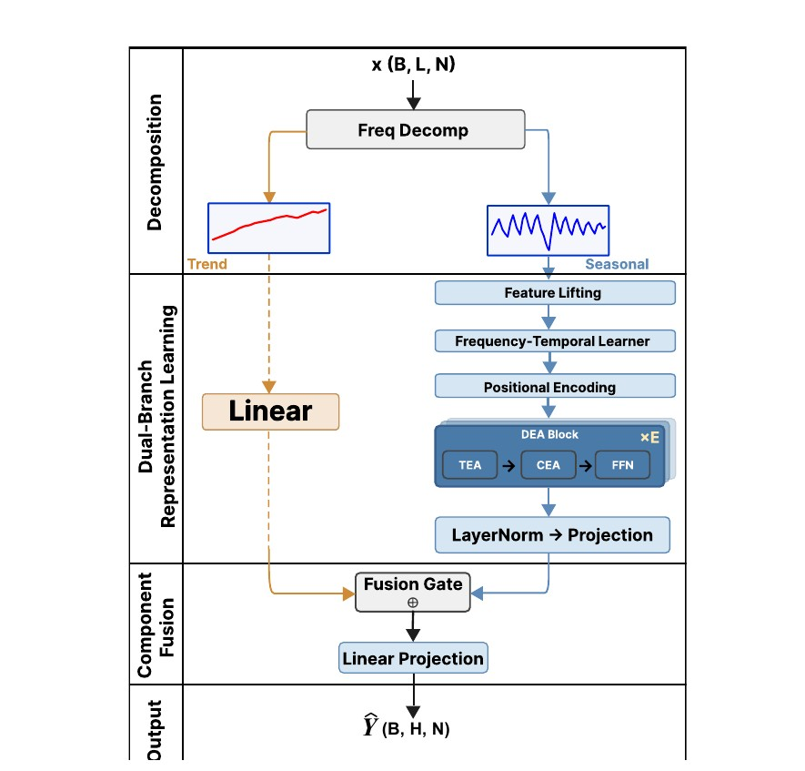
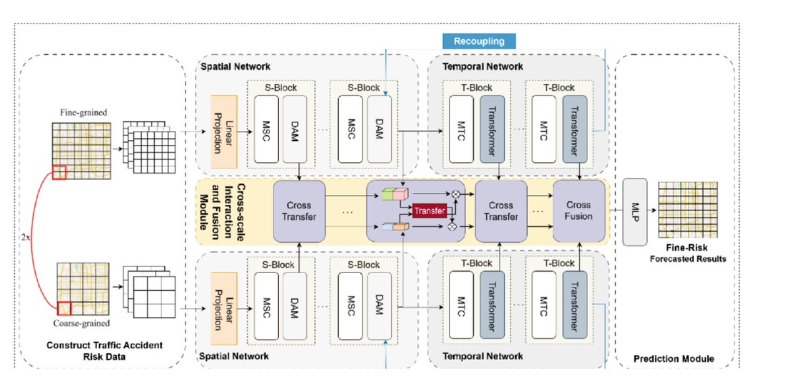
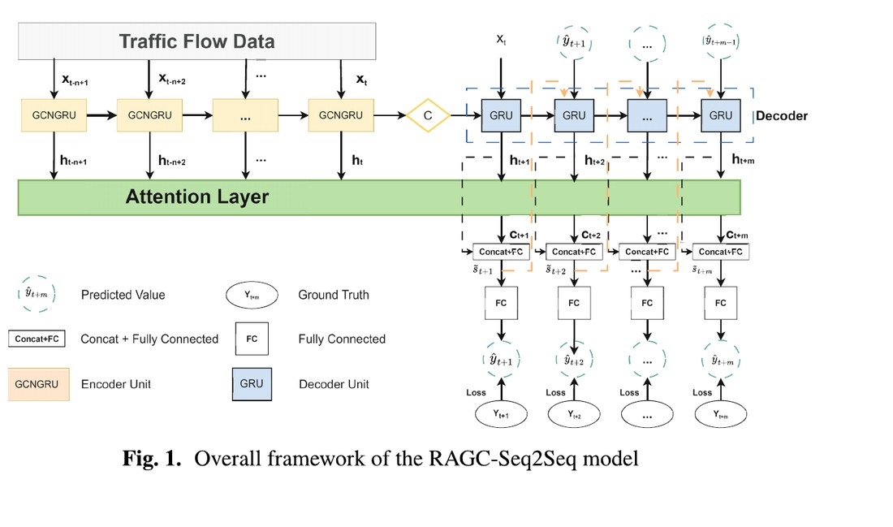

FreDEA: Frequency-Aware Dual External Attention for Time Series Forecasting
PRICAI 2026 · 第一作者 · 已录用
频率感知双外部注意力框架，通过软频谱掩码与输入自适应频率选择，高效建模时间与变量依赖。
我是湖南科技大学物联网工程专业本科生，研究聚焦多变量时间序列预测与时空数据建模。目前已发表或录用 3 篇 CCF-C 类会议论文，其中 2 篇为第一作者。
两篇第一作者论文的模型设计、代码实现、实验验证与英文写作均由本人独立完成。研究生阶段希望系统学习强化学习理论与算法，进一步探索进化优化与强化学习的结合。

PRICAI 2026 · 第一作者 · 已录用
频率感知双外部注意力框架，通过软频谱掩码与输入自适应频率选择，高效建模时间与变量依赖。

ICIC 2026 · Springer LNCS 16650 · 第一作者
提出多粒度时空解耦—重耦合网络 MDR-Net，增强极端稀疏和零膨胀事故数据的风险表征。

ICIC 2025 · Springer LNCS 15848 · 第二作者
结合图卷积、循环神经网络与时序注意力，建模交通网络中的动态时空依赖。
物联网工程 · 本科
GPA 3.37 / 4.0 · 专业排名 9 / 116（前 7.8%）
编程与工具：Python、PyTorch、LaTeX；能够独立完成数据处理、模型设计、训练调参、基线复现与实验分析。
科研实验：多数数据集对比、消融实验、超参数分析、效率测试与结果复现。
英语能力：CET-4 497，CET-6 480；具备英文文献阅读与论文写作能力。